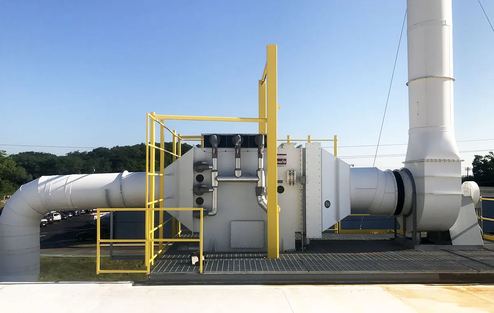

The Right Material for the Right Application.
Each job starts with the chemical, the temperature and the duty. We choose the thermoplastic or FRP to suit them, and make the fabrication drawings ourselves or work from the drawings you supply.

We are a full-service turnkey solution provider. From the first drawing to the plant running on site, and the field service after it, Plasto-Fab stays answerable for the whole job.
We design, engineer, build, erect and commission chemical process equipment and piping, and supply it as working systems with everything they need around them.


Each job starts with the chemical, the temperature and the duty. We choose the thermoplastic or FRP to suit them, and make the fabrication drawings ourselves or work from the drawings you supply.
Engineering thermoplastic sheet is cut, rolled and formed on imported bending and butt-welding machines, by a team with three decades of practice.
Seams are welded to DVS 2207–2208 on German Wegener and Widos equipment. Assembly brings every fabricated section together into its final form.
Every piece of equipment is checked and tested for the conditions it will face, before it leaves our facility.
We deliver to site, erect the equipment, connect the piping and ducting, and commission the system.
We return for field service, repair and installation, wherever the plant is. Repeat orders from most of our clients are the best proof we know.
The German Welding Society's guidelines for welding thermoplastics and for the machines that do it. Our welds follow them, for long-life joints.
All our fabrication is done with German-made Wegener and Widos plastic welding equipment and technology.
We engineer large equipment to cut out unnecessary joints wherever the design allows. Each joint avoided is one less place for a leak to start.